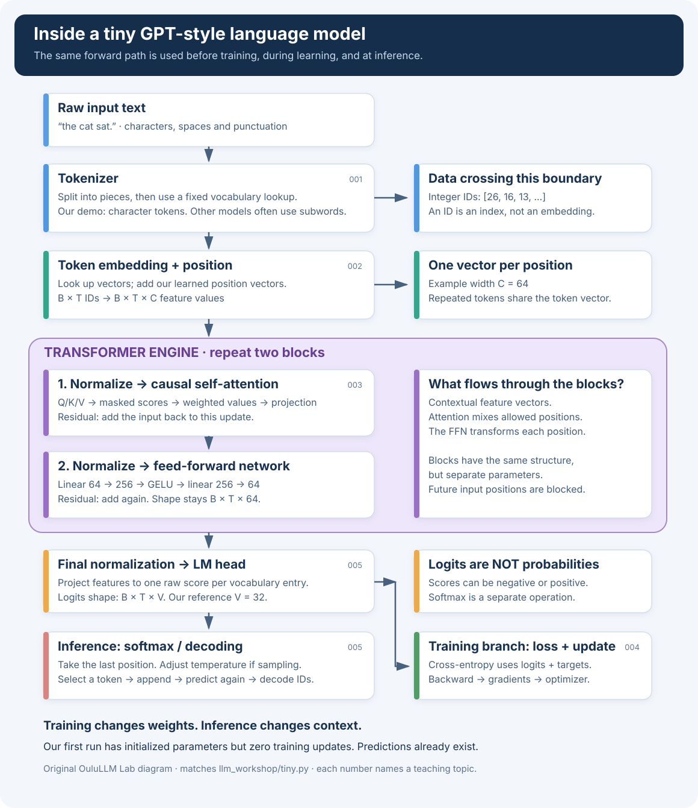

003 · Attention and transformer blocks
A slower explanation of every attention step
Follow normalization, Q/K/V, scores, masking, softmax, value mixing, residuals and the FFN with numerical examples. The walkthrough also explains every desktop message and View shape.
Inspect how a position reads information, then transforms its features.
Run the code and the visual demo
python llm_workshop/003_attention_and_transformer/demo.py --step python llm_workshop/003_attention_and_transformer/ui.py
Run from learning/llm-workshop-001 in the workshop environment. The terminal pauses with Enter; the desktop provides editable controls and actual computations.
What is happening?
The demo calculates Q, K and V using the actual projection parameters. It splits the projected features into heads, calculates scaled query–key scores, masks future positions, applies softmax and mixes the values. It concatenates head outputs, projects them, adds the residual, normalizes and runs the feed-forward network, then adds the second residual. Every inspection checks the explicit output against the shared block implementation in evaluation mode. This makes the visual matrices accountable to the code.
Show it step by step
- Enter
the catand select the attention view. Rows are query positions; columns are key positions. - Switch to mask and masked_scores; future scores are negative infinity, shown as blank cells.
- Select Q/K/V, then switch head and block; the numbers belong to different projections or layers.
- Switch to after_attention_residual, feed_forward and output to follow the rest of the block.
- Change only a later character. Earlier output vectors remain the same under causal masking.
Use --block and --head (zero based) in the terminal; the desktop has matching selectors. Read inspect() in demo.py alongside CausalSelfAttention.forward and Block.forward in tiny.py. The selected head affects Q/K/V and attention views; residual/FFN views combine all heads.
Questions to discuss
Why can the diagonal be nonzero? The current token is known when predicting the following token. Why does the first attention row have weight one? Only one location is allowed. Does this prove that the model understands the sentence? No.
Attention coefficients change with the input; projection matrices are persistent parameters. Our blocks use normalization before each sublayer. Heatmaps of attention alone are not full explanations of model decisions.
Locate it in the whole model
